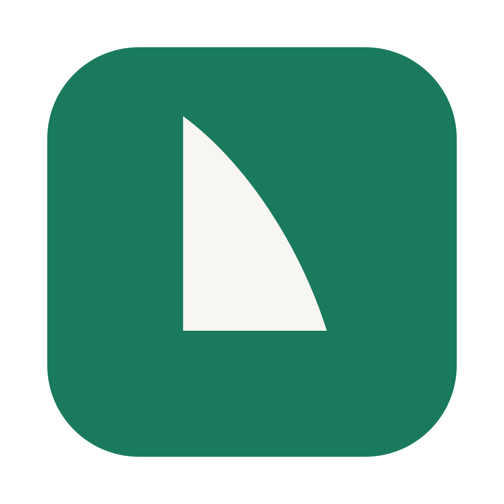
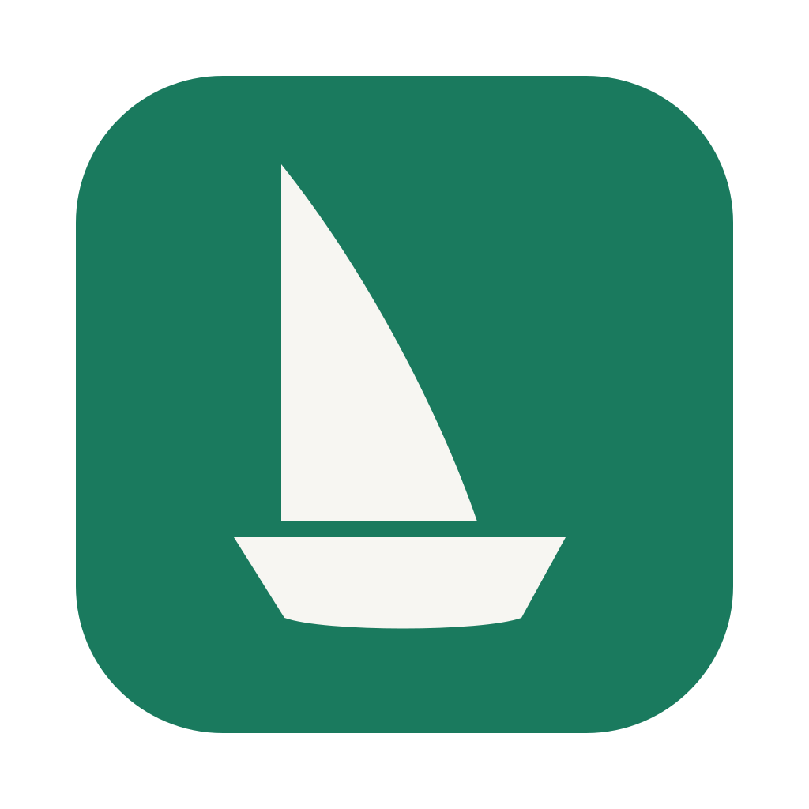
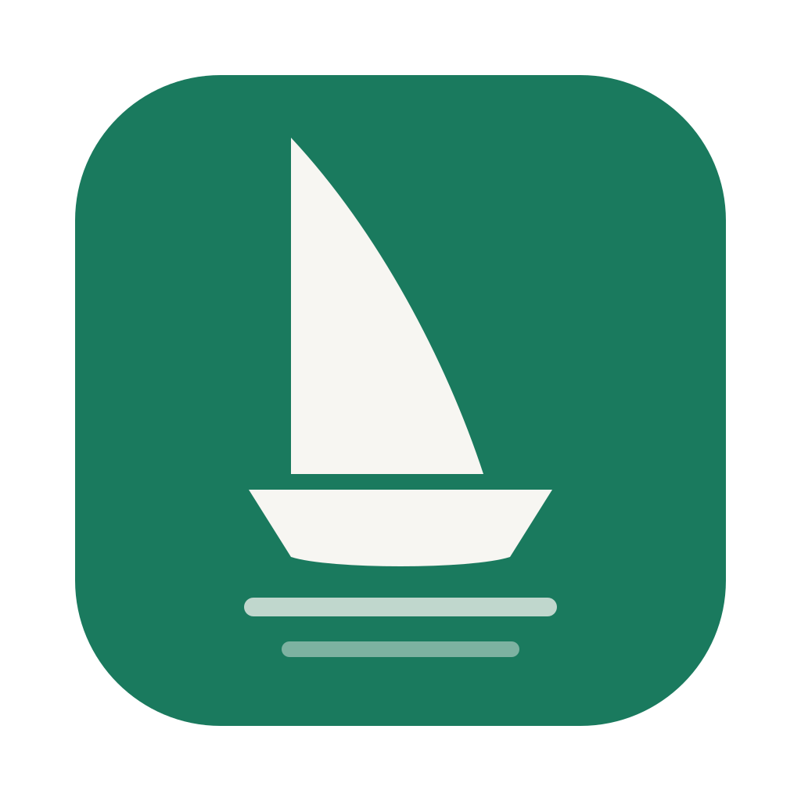
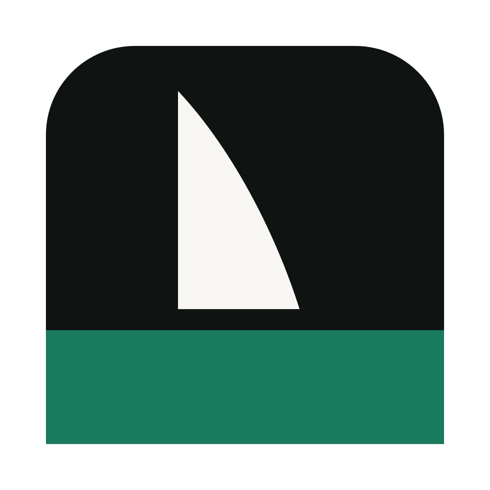
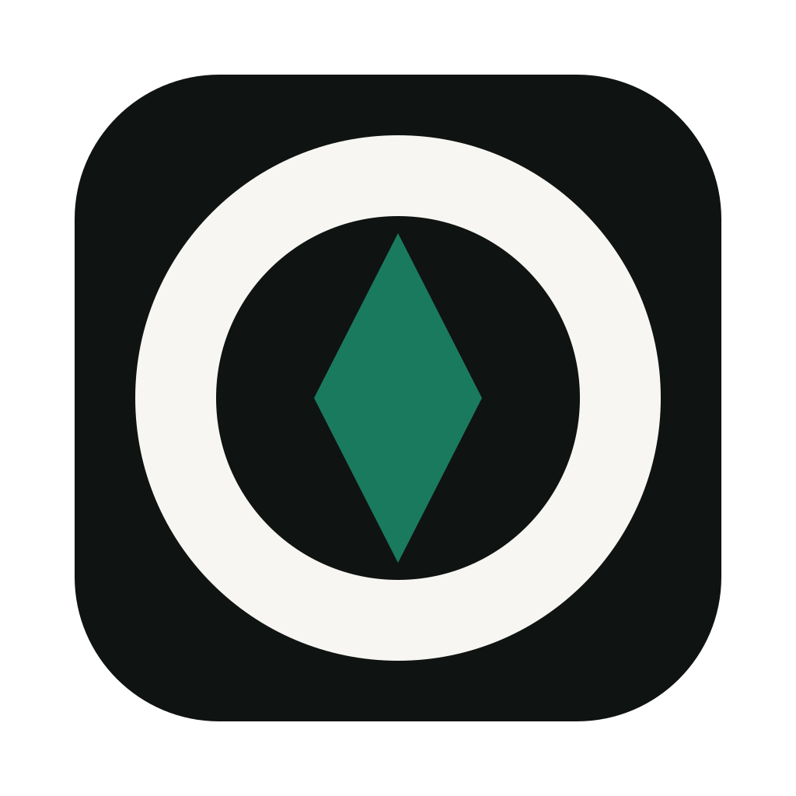

La voile
Un seul aplat, la toile au vent. Rien d’autre.

Même palette que le site : encre #0F1311, vert #1A7A5E, papier #F7F6F2, corail #E8805A. Un aplat par forme, aucun dégradé, aucun détail qui meurt à 32 px.
Un seul aplat, la toile au vent. Rien d’autre.

Voile et coque réunies : la silhouette d’un bateau.

La barque et ses deux rides : le mouvement, sans couleur en plus.

Encre et vert : la toile blanche se pose sur l’eau.

La navigation sans le bateau : un anneau, une aiguille pleine.

Tuile papier, voile corail, coque encre : l’icône à l’endroit.
Lecture : la grande vignette est la taille du Dock en grand, la rangée du bas est la vraie question — 32 et 16 px, où tout se joue. Dis-moi le numéro retenu : je le pousse dans les trois maîtres (normal, petites tailles, barre de menus), je regénère .icns/.ico/favicon/visuel de partage et je publie.